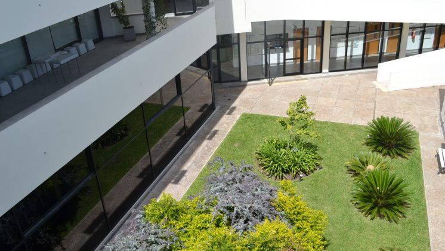

Sobre Mí
¡Hola! Soy un apasionado de la jardinería y las plantas. Desde pequeño, he tenido un profundo amor por la naturaleza y he dedicado mi tiempo a cultivar una variedad de plantas en mi jardín. Mi objetivo es compartir mi experiencia y conocimientos sobre plantas a través de este blog. Aquí encontrarás consejos, guías y todo lo que necesitas para cuidar y disfrutar de tus plantas.
